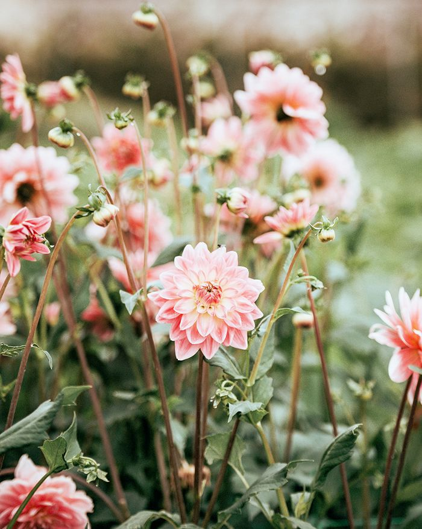
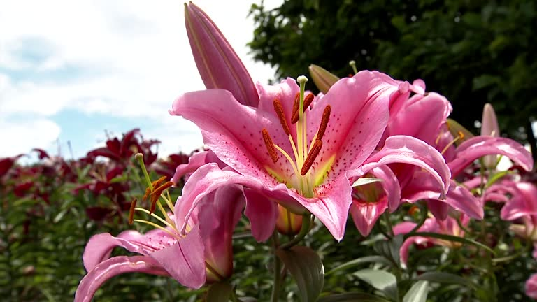
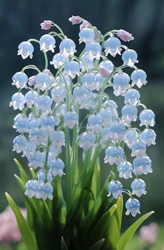

Flowers
Around the world
Flowers have fascinated humans for centuries, not only for their vibrant colors and delicate shapes but also for the stories and traditions they carry. Across the globe, flowers play a central role in cultures, ceremonies, and art. From the cherry blossoms of Japan to the tulip fields of the Netherlands, each region celebrates its unique flora in its own way. Whether used for decoration, symbolism, or even medicine, flowers are a universal language of beauty and emotion. Exploring the flowers of different countries allows us to appreciate the incredible diversity of nature and understand how deeply these plants influence human life.
Asia is home to some of the most iconic flowers and flower-related festivals in the world. Japan’s sakura, or cherry blossoms, are celebrated each spring during hanami, a tradition of enjoying the transient beauty of blooming trees. Similarly, in India, marigolds are widely used in religious ceremonies and weddings, symbolizing auspiciousness and prosperity. In China, the peony is revered as the “king of flowers” and represents wealth, honor, and feminine beauty. Flowers in Asian cultures often carry deeper meanings than mere aesthetics; they convey emotions, tell stories, and reflect philosophical and spiritual beliefs, making them essential to cultural identity.

Europe is famous for its meticulously designed gardens and vast flower fields. The Netherlands is synonymous with tulips, where vibrant rows of red, pink, and yellow flowers paint the landscape each spring. France is celebrated for the enchanting gardens of Versailles and Provence’s lavender fields, which attract millions of tourists every year. Meanwhile, England has a long-standing tradition of flower symbolism in literature and heraldry, with roses representing both love and political allegiances. European flowers often serve dual purposes: providing breathtaking scenery while embodying history, art, and national pride.

In the Americas, flowers range from wild poppies in California to tropical hibiscus in Hawaii. South America, especially Brazil and Colombia, is rich in orchids and exotic species. Africa boasts incredible floral diversity, with South Africa’s unique fynbos region. Many flowers here adapt to extreme climates, showing nature’s resilience and offering inspiration for art and horticulture. In the Americas, flowers range from wild poppies in California to tropical hibiscus in Hawaii. South America, especially Brazil and Colombia, is rich in orchids and exotic species. Africa boasts incredible floral diversity, with South Africa’s unique fynbos region. Many flowers here adapt to extreme climates, showing nature’s resilience and offering inspiration for art and horticulture.
Best Europe countries with the preeties flowers:
- Poland
- Czech Republic
- Italy
- Croatia
- Spain
| Number |
Poland |
Czech Republic |
Italy |
Spain |
Croatia |
| Gardens |
92384 |
2324 |
1234 |
923 |
723 |
| Parks |
82384 |
1324 |
1534 |
323 |
123 |
| Meadows |
92384 |
1234 |
923 |
| Flowermans |
82384 |
1324 |
1534 |
323 |
123 |
| Number |
Japan |
Russia |
North Korea |
| Gardens |
9323 |
723 |
234 |
| Meadows |
9323 |
Asia Countries with most flowers:
